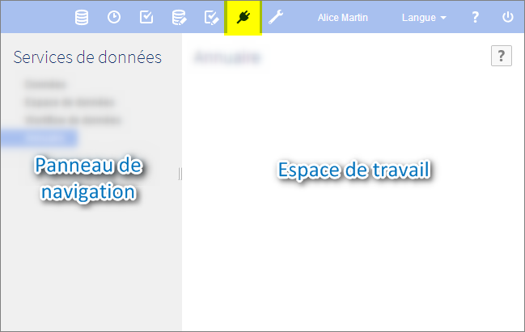

EBX5
Documentation > Guide utilisateur > Services de données
Introduction aux services de données
Contenu de la section
Présentation
Fonction du service de données
Un service de données est un web service standard qui permet d'interagir avec EBX5. Il peut être utilisé pour accéder à une partie des fonctionnalités disponibles par l'interface utilisateur.
Les services de données peuvent être générés dynamiquement à partir d'un modèle de données dans la section 'Services de données'.
Voir aussiManuel de référence
Lignage
Le lignage établit des profils de droit d'accès utilisés par les services de données. Quand les services de données accèdent aux interfaces WSDL, ils utilisent les profils de droit d'accès définis par ce mécanisme.
Glossaire
Voir aussiServices de données
Utilisation de l'interface utilisateur de la section Services de données

Note
Seuls les utilisateurs autorisés peuvent accéder à cette section via la 'Perspective avancée'.
Concepts apparentés
 Sommaire du guide utilisateur
Sommaire du guide utilisateur